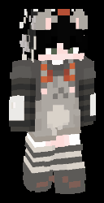

バステト
# ティア
# バリア獲得条件
# 使用中に反応するトリガー
# バフ
データベース
英語表記：Bastet
奇襲や撤退に適したウェポンの一つ。
アイテムを使用したときに、プレイヤーの移動速度が上昇する。
猫の神気をまとうため、猫同等の暗視効果も付与される。
その後、任意のタイミングで左クリックをすることで一度だけ、超加速することができる。
なお、使用中は特有のパーティクルをまとうので、移動の際などにバレやすくなる。
他のウェポンより長けている点は、圧倒的速さで敵を振り回せる点。
とくに、常設されたトランポリンと併用すれば、さらに遠くまで移動ができる。
移動速度上昇：6秒
暗視：6秒
クールダウン：9秒
擬態モデル
武器ページへ戻る